DIS Nieuws
Blijf op de hoogte
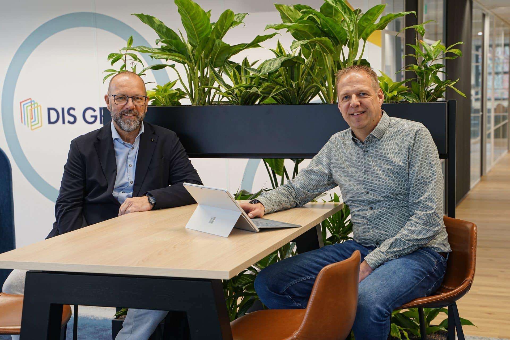
Terugblik op een succesvol eerste halfjaar van 2026
Conrad van Kooten (algemeen Directeur) en Edwin Leentfaar (Technisch directeur) aan het woord:
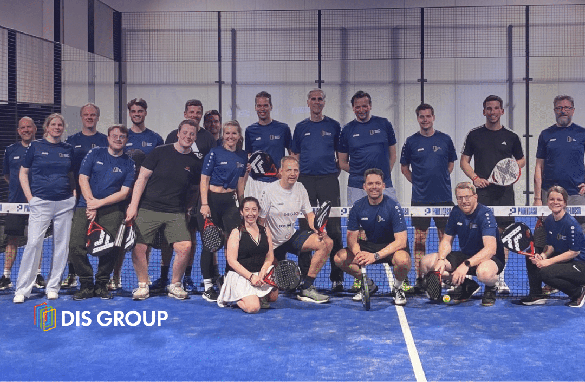
Samen de baan op
Bij DIS Group vinden we het belangrijk om niet alleen samen hard te werken, maar ook samen plezier te maken.
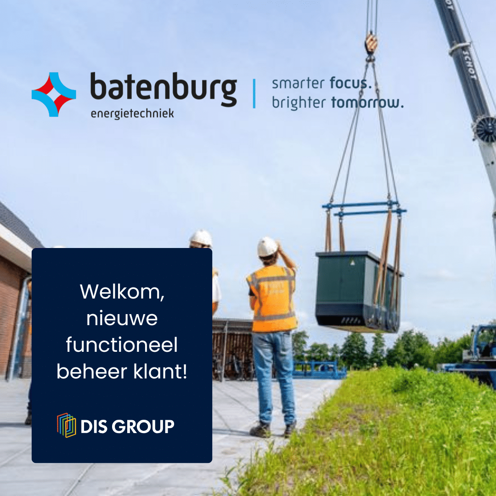
Batenburg; nieuwe functioneel beheer klant!
Met trots verwelkomen wij Batenburg Techniek N.V. als nieuwe klant voor Functioneel Beheer.
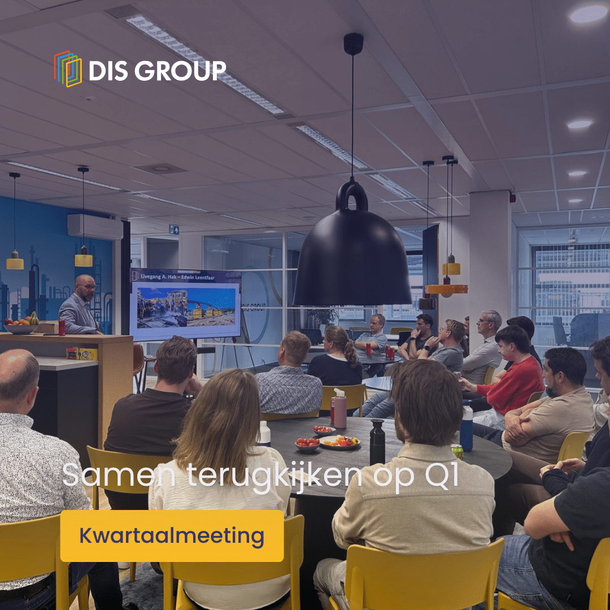
Dit is hoe wij bouwen aan groei
Afgelopen donderdag was het weer tijd voor onze kwartaalmeeting 🙌
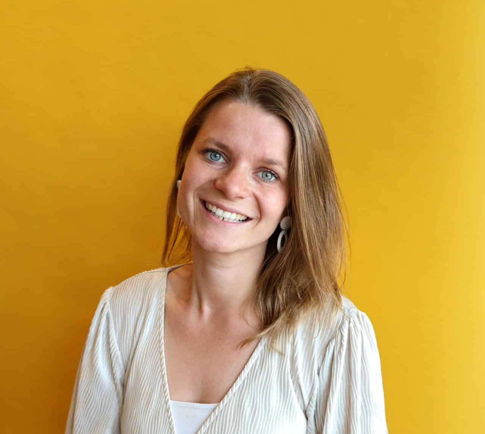
Antoinette Oosterwijk
Wat leuk dat je een kijkje neemt op onze website! Graag vertel ik je iets over mijn ervaring bij DIS...
Pim Donderwinkel
Hoi, ik ben Pim en sinds april 2024 werk ik als consultant bij DIS Group. In deze rol help ik...
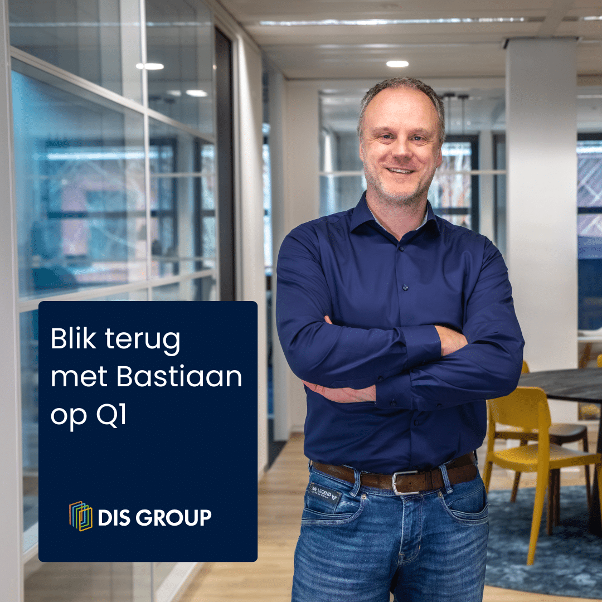
Bastiaan aan het woord; Terugblik op Q1
” Sinds januari zijn we officieel onderdeel van DIS Group en dat voelt vanaf het eerste moment als een warm...
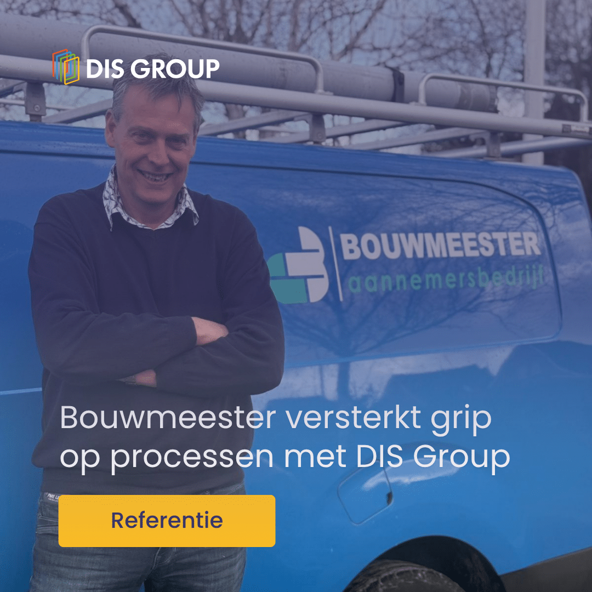
Van implementatie naar grip en groei
Hoe zorg je ervoor dat een implementatie niet stopt bij livegang, maar juist de basis vormt voor verdere professionalisering?
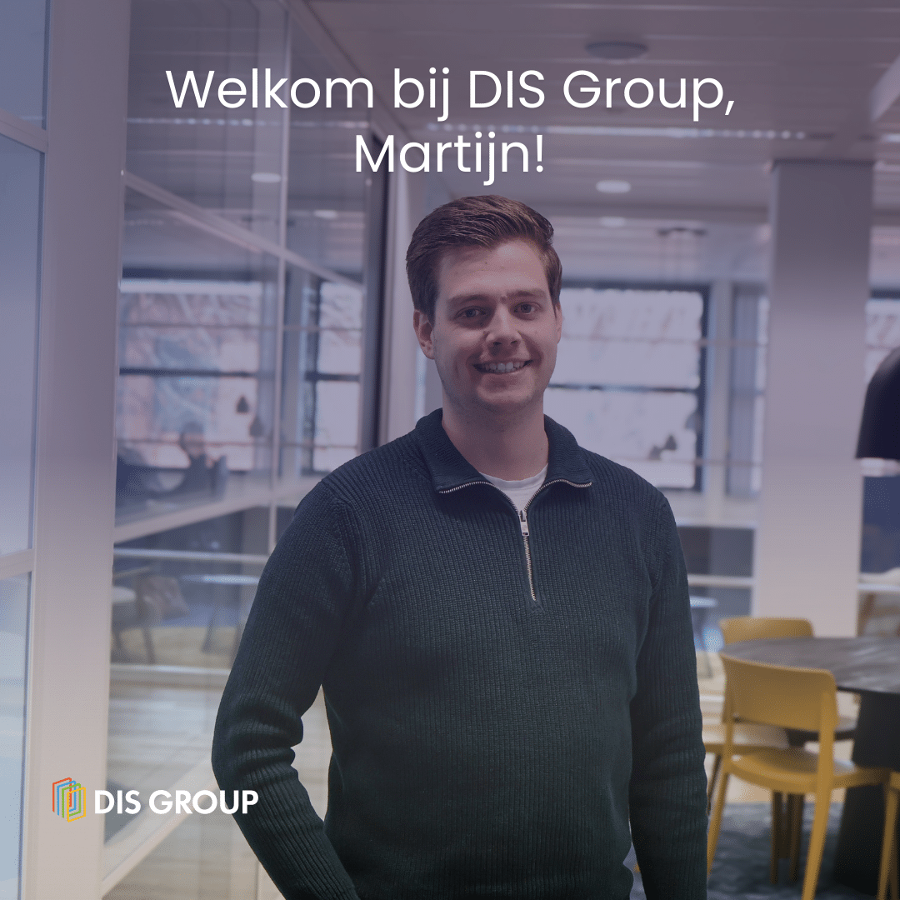
Nieuwe collega Martijn
Per 1 maart is Martijn van der Zanden begonnen bij DIS Group als functioneel beheerder.
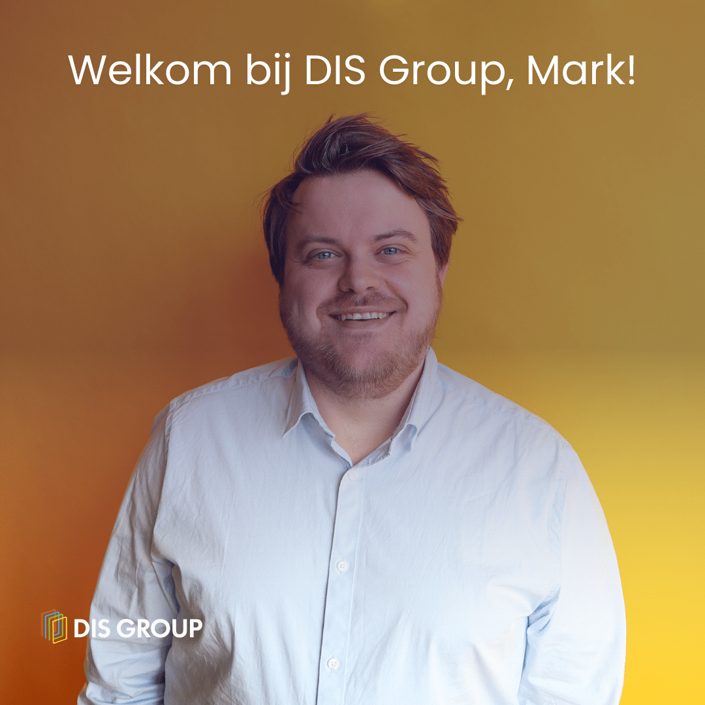
Nieuwe collega Mark!
We zijn blij om Mark van Holland te verwelkomen in ons team! Hij gaat aan de slag als Power BI...
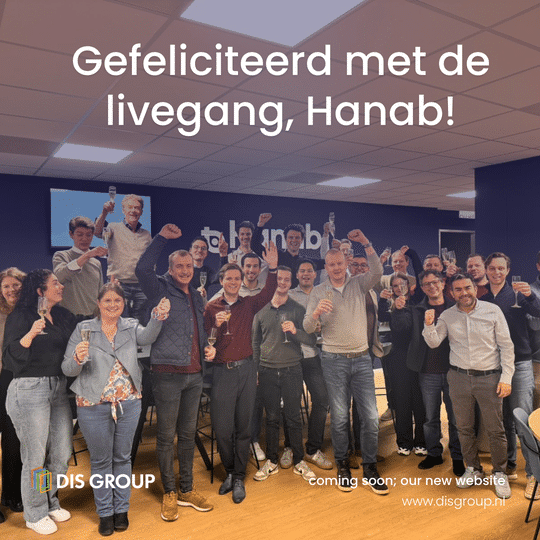
Livegang Hanab Inbinding
Afgelopen maandag is het project Hanab Inbinding succesvol live gegaan. Een intensief project waarin de processen, systemen en werkwijzen van...
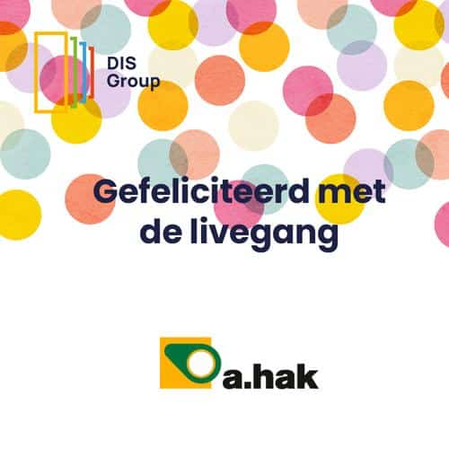
Livegang A. Hak
Na maanden van intensieve voorbereiding is het zover: A. Hak is live! Drie materieelbedrijven zijn succesvol samengevoegd tot één geïntegreerd...